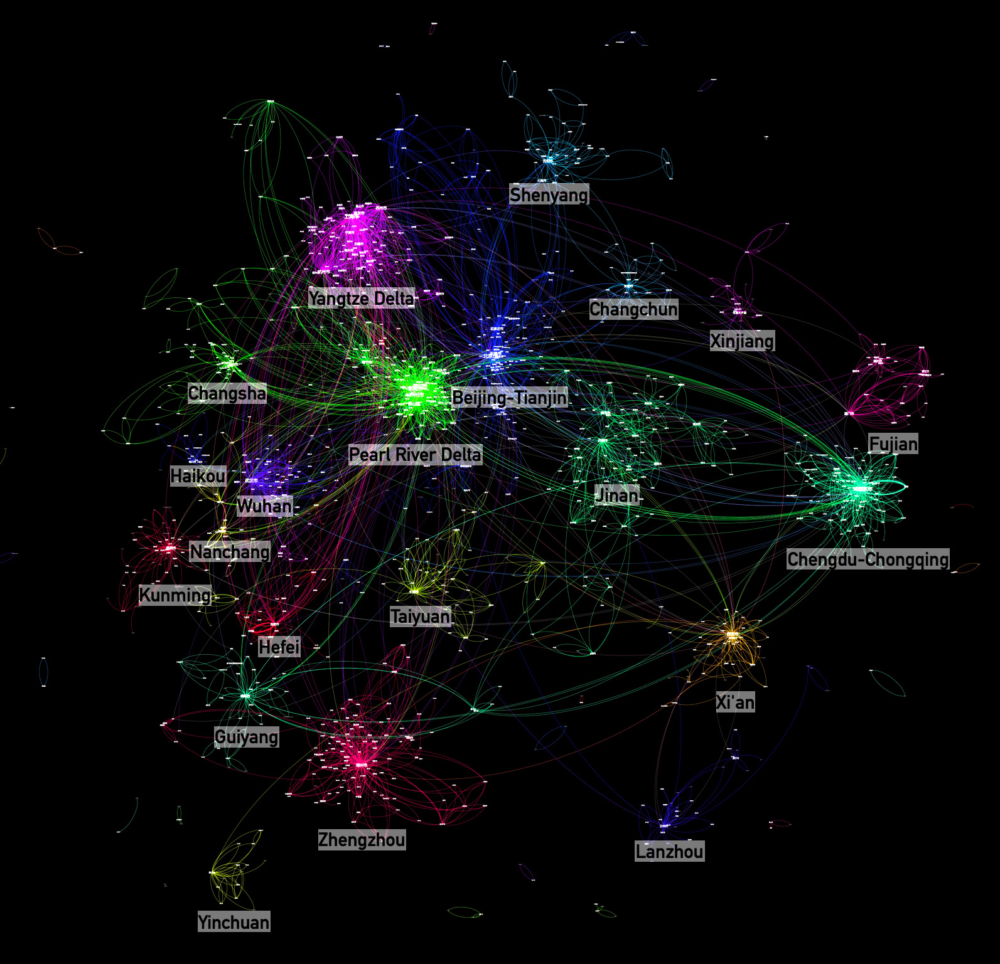
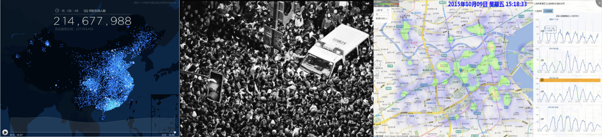
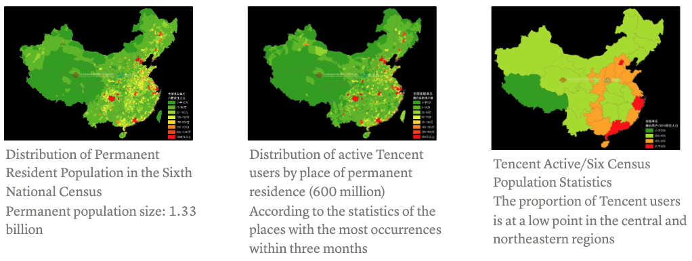
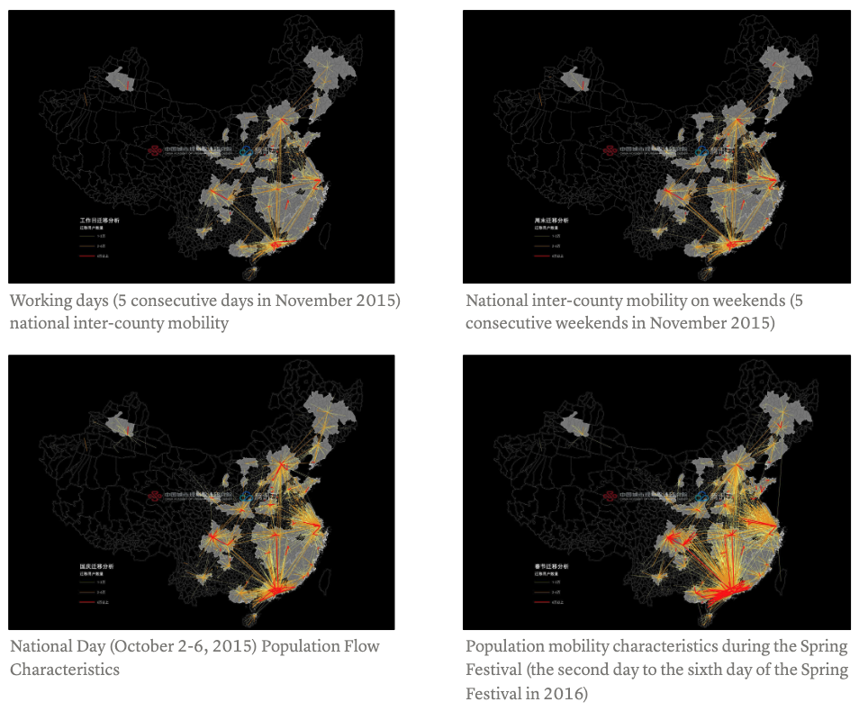
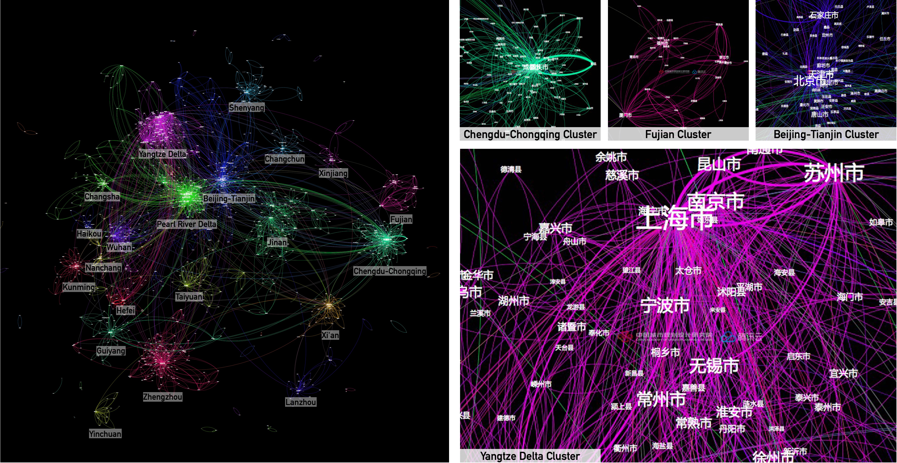
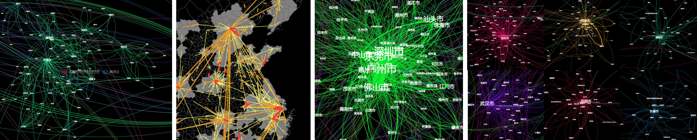
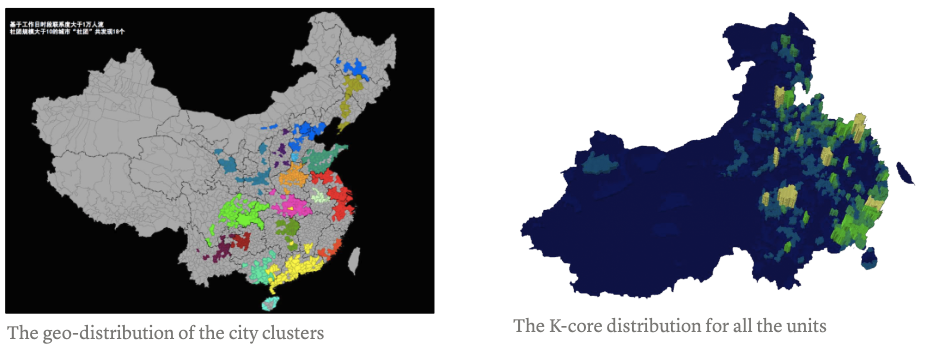

![]()
Both figures show the average daily population flow distribution among more than 2,000 county-level units. The picture on the left is the average for workdays, and the picture on the right reflects the weekend situation. The former has a “diamond structure” dominated by the Beijing-Tianjin-Hebei, Yangtze River Delta, Pearl River Delta, Chengdu-Chongqing, and Mid-Delta metropolitan areas. The density of the latter reflects the strength of travel in various regions.
- HongMou Zhang, Liu Liu, Pensen Wang, Jinhua Zhao, “Depicting the Blurred Regional Boundaries in China Using Individual Mobility Data”
The Idea
According to the closeness of the connection, more than 2,000 county-level units are drawn into a pattern with a gravity layout. Through community detection, about 20 clusters are highlighted, and many share typical degrees of development. For example, most provincial capital cities belong to a single-center model, while the Yangtze and Pearl River Delta metropolitan areas present a network structure.
The Following Articles are translated from Chinese versions: City Clusters and City Flows.

Data Source
Tencent’s big data research has achieved the highest level in national-scale spatial research, with 600 million monthly active users. They conducted extensive research using large-scale sampling over a wide range of time and space. Utilizing the Tencent Cloud team’s data foundation and technical expertise, they focused on various topics such as migration patterns from Beijing, Shanghai, and Guangzhou, travel analysis during the Spring Festival, tourism trends on National Day, and early urban congestion warnings. To explore more about Tencent LBSN research, follow their official account, “Yi Chu Xing,” or check out the “WeChat-Wallet-City Service-City Heat Map” for area-specific heat maps.
This unprecedented collaboration between the two parties involved a customized cooperation plan to align their needs and ensure smooth research development. The study incorporated three types of research data: population distribution in 10-square-kilometer grid units across the country, population flow matrix across 2,242 county-level units, and message flow within the same county-level units. To ensure comprehensive analysis, the research spanned four distinct periods: five working days, weekends, National Day, and Spring Festival. (For clarification, “population” refers to the research subject below.)

Distribution of National Population
The number of active Tencent users shows a strong correlation (correlation coefficient of 0.91) with the user count of 1.33 billion people in China’s Sixth Census, based on the division of county-level units.
Analyzing the user distribution on a city scale reveals a polarized pattern within Tencent’s system. In major cities with populations of 1 million or even 10 million, according to the Sixth Census, the concentration of Tencent users surpasses the statistical population. Similarly, unit areas with populations below 500,000 also have relatively high numbers of Tencent users. For ease of comparison, the coordinates in the figure are approximately scaled at a 1:2 ratio.
Apart from comparing census data, the 2014 national and provincial resident population statistics can also be utilized for provincial-level comparisons. In most provinces, the proportional relationship between the two datasets remains close to 1:2.
Interestingly, when mapping the data spatially, provinces and cities with a higher proportion of Tencent users form a distinctive “ring” pattern. We propose a possible explanation for provinces and cities with lower proportions: the underdeveloped regions in the central and western areas, divided by the Hu Huanyong line, may have insufficient sample sizes of sparsely populated users. As a result, the two circled areas in Northeast China and Central China may more accurately reflect population loss. In other words, these areas might have a significant number of registered populations, but a large portion of them have relocated, and based on location point calculations, they are not considered current residents.

Population Flows

City Clusters
There are numerous definitions of urban agglomeration, and opinions among academics also vary. This article refrains from delving into extensive analysis or explanations. The following map, resembling a “nebula,” disregards the geographical locations of individual units. Instead, units are positioned closer to each other based on the strength of population flow connections, following the gravity model. (Gephi offers various layouts, and this is just one of them.) To ensure clarity, it is more suitable to use the term “urban community” rather than urban agglomeration to describe the research subject. Notably, the most prominent clusters, akin to dazzling stars in the night sky, primarily consist of renowned urban agglomerations and regions, such as Beijing-Tianjin-Hebei, Yangtze River Delta, Pearl River Delta, Chengdu-Chongqing, and more. Provincial capital cities, including Taiyuan, Xi’an, and Changsha lead the secondary star clusters.

There are also some particular star-like clusters, such as the one in Shandong Province, probably due to the mountain landscape.

When projecting the distribution of these nebulae back into spatial positions, a completely different pattern emerges. By counting, we can identify 17 “urban associations.” Overall, these associations exhibit a spatial clustering pattern. However, unlike previous divisions of related urban agglomerations, most of these “urban associations” feature “breaks” or “enclaves.” This outcome is a result of not intentionally considering spatial adjacency constraints during calculations, and it objectively reflects the development imbalances between cities or regions, particularly in terms of population flow strength.
Let’s take a closer look at the “Yangtze River Delta City Association” as an example. In addition to the conventional analysis that includes southern Jiangsu and northern Zhejiang, it is observed that Xuzhou, Lianyungang, and other cities in northern Jiangsu also have close ties to the association. This reflects the strengthening connection between the southern and northern parts of Jiangsu province, while a certain gap exists in the central area of Jiangsu. Furthermore, within the Yangtze River Delta region, Anhui is identified as another “community” centered around Hefei. This suggests that, based on existing population contact data, Anhui has not yet formed close connections with the developed regions of the Yangtze River Delta. Indeed, many “communities” align with provincial boundaries, adhering to the administrative management system in China. However, there are exceptions to this pattern. For instance, the “Pearl River Delta Urban Associations” extend their influence to Jiangxi, Hunan, Guangxi, and other neighboring areas beyond Guangdong Province. Furthermore, cities like Harbin in Heilongjiang, located far away, bypass the “Liaoshen urban community” and establish direct connections with Beijing, Tianjin, and Hebei. These exceptions highlight the complex dynamics of urban interactions that sometimes transcend administrative boundaries. In addition to utilizing data from working days for division, other time periods can also be employed for the same analysis. For instance, the provided image demonstrates a division based on the National Day period. In addition to employing the community detection model, another approach to analyze connections is through the use of K-Core. This method is generally associated with determining the prominence of a city. The higher the connectivity of a city or region, the higher its K-Core value, indicating its elevated status.
